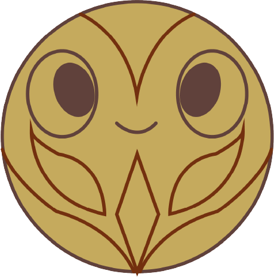

¿Qué encontrarás en MopAR?

En nuestra plataforma, podrás explorar el proceso de elaboración del Barniz, conocer a los artesanos que lo han preservado por generaciones y experimentar con modelos digitales que recrean la técnica. Creemos que la tecnología es una herramienta poderosa para la educación y la conservación del patrimonio, y con MopAR, estamos dando un paso adelante en la protección de esta tradición.
Encontraras un recorrido digital por la historia y evolución del Barniz de Pasto. Entrevistas y testimonios de artesanos que han dedicado su vida a esta técnica. Herramientas interactivas para explorar y experimentar con los patrones y colores del Barniz. Una comunidad que valora el arte y la cultura, con la oportunidad de aprender y compartir experiencias. Descubre cómo la realidad aumentada puede acercarte a este increíble legado artesanal.